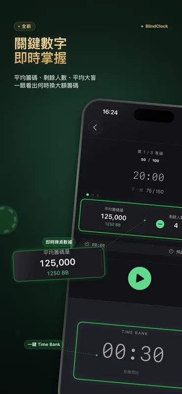
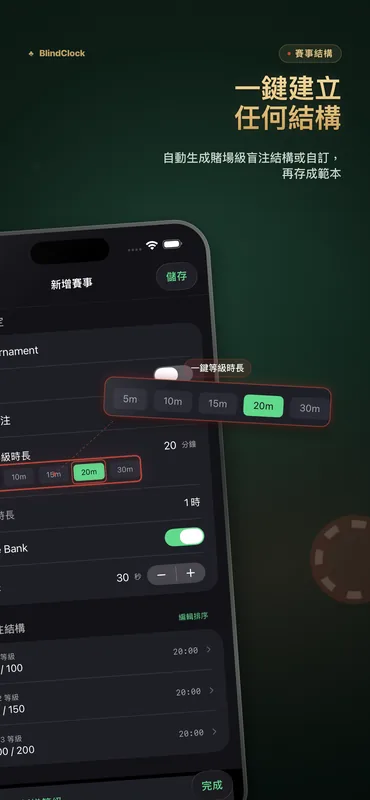
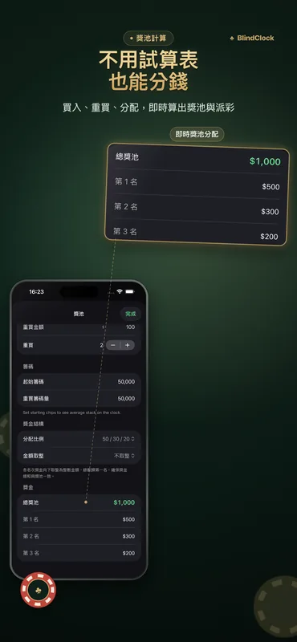

主持人需要的，都在這裡
為家庭牌局與俱樂部錦標賽設計。螢幕關閉也準確，隔著牌桌也看得清。
精準錦標賽計時
暫停、繼續或跳過級別。App 在背景或被強制關閉後計時照常，重開就從原處接續。
盲注結構產生器
輸入人數、籌碼與預計時長，就得到含休息的賭場式結構。
獎池計算器
買入、重買與獎金分配當場算好，散場不用開試算表。
Time Bank
可設定的 Time Bank 給玩家額外思考時間，有提醒與音效。
Live Activity 與動態島
目前級別顯示在鎖定畫面與動態島。iPhone 充電時，StandBy 會顯示全螢幕賽事時鐘。
iPad 牌桌展示模式
把 iPad 轉成橫向，就是大字倒數加兩側盲注。全桌都看得到，螢幕也不會休眠。
範本分享
把賽事匯出成 .blindclock 檔，用 AirDrop 傳給朋友，對方點一下就匯入同一份結構。
iCloud 同步
賽事範本在 iPhone 與 iPad 之間同步，所有人免費。
大螢幕模式
接上電視或投影機，大螢幕顯示賽事時鐘，你的裝置當遙控器。BlindClock Pro 功能。
時鐘主題與品牌化
從「午夜」到「日光」共 7 款主題，會改變整個 App 的配色。大螢幕顯示你的房間名稱與標誌。免費預覽，Pro 套用。
籌碼清點與結算核對
逐面額點碼、儲存籌碼結構，散場前確認籌碼總數對得上。BlindClock Pro 功能。
看看實際畫面



範例盲注結構
一份好結構長這樣：快速賽約 1.5 小時，標準家庭局約 3 小時，深籌碼賽事 4.5 小時以上。BlindClock 的產生器會依你的人數、籌碼與目標時長排出一份。
| 級別 | 快速 · 15 分鐘 | 標準 · 20 分鐘 | 深籌碼 · 30 分鐘 |
|---|---|---|---|
| 1 | 25 / 50 | 25 / 50 | 25 / 50 |
| 2 | 50 / 100 | 50 / 100 | 50 / 100 |
| 3 | 100 / 200 | 75 / 150 | 75 / 150 |
| 4 | 200 / 400 | 100 / 200 | 100 / 200 |
| 5 | 300 / 600 | 150 / 300 | 150 / 300 |
| 6 | 500 / 1000 | 200 / 400 | 200 / 400 |
| 7 | — | 300 / 600 | 250 / 500 |
| 8 | — | 400 / 800 | 300 / 600 |
| 9 | — | 500 / 1000 | 400 / 800 |
| 起始籌碼 | 5,000 | 5,000 | 10,000 |
盲注以小盲 / 大盲表示。每四到五級加一次 10 分鐘休息，BlindClock 的產生器會自動安排。
2.5 有什麼新功能
- 時鐘主題與品牌化（Pro） — 7 款主題（包括第一款亮色主題「日光」）會改變整個 App 的配色。大螢幕可以顯示你的房間名稱與標誌，每款主題都能免費預覽。
- 結算助手（Pro） — 逐面額清點每位玩家的籌碼，存下你的籌碼結構；散場前，BlindClock 會核對輸入的總碼和場上籌碼是否相符。
- 細節優化與修正 — iPad 數字鍵盤恢復可讀，大螢幕的 Time Bank 放大，頂端顯示目前級別，每次更新後會出現一次「新功能」畫面。
BlindClock Pro
免費版包含計時器、即時動態、產生器、獎池計算、牌桌數據、同步，以及最多 5 個自訂賽事。Pro 解除上限，並加入大螢幕模式、獎池計算進階與結算助手、時鐘主題與品牌化。買一次，所有裝置都能用。
- 大螢幕模式（電視/投影機）
- ICM 分錢與獎池範本
- 時鐘主題與牌桌品牌化
- 籌碼清點與結算核對
- 無限自訂賽事
- 一次買斷
- 無廣告、無訂閱
- 所有裝置通用